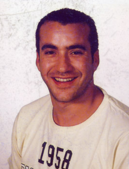

Oscar Figuerola García
Oscar Figuerola García  Oscar Figuerola García
Oscar Figuerola García 
 Haz clic aquí para detalles de la Familia de Oscar con Laura López García Haz clic aquí para detalles de la Familia de Oscar con ... Fazakas ...
Haz clic aquí para detalles de la Familia de Oscar con Laura López García Haz clic aquí para detalles de la Familia de Oscar con ... Fazakas ...
This page is within a frameset. View the entire genealogy report of Figuerola García families, or surname index of Figuerola García pedigrees or report summary of Figuerola García heritage from "Árbol Genealógico de Manolo y Amalia".
HTML generator.
© 2006 GenoPro Inc. All Rights Reserved.